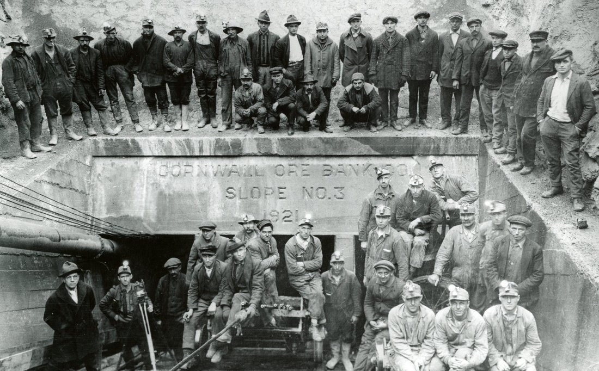
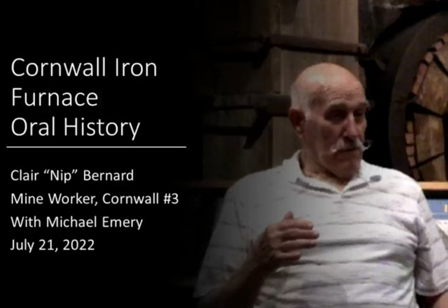
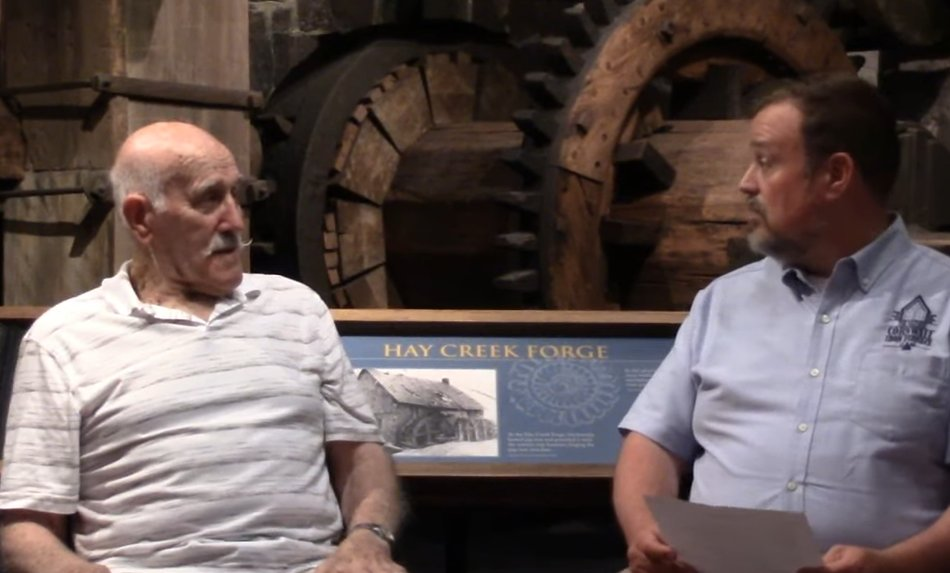
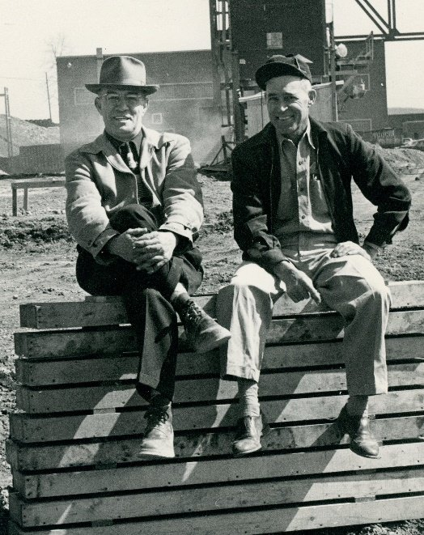
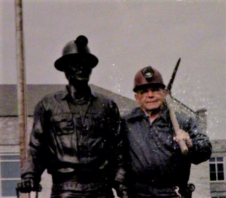
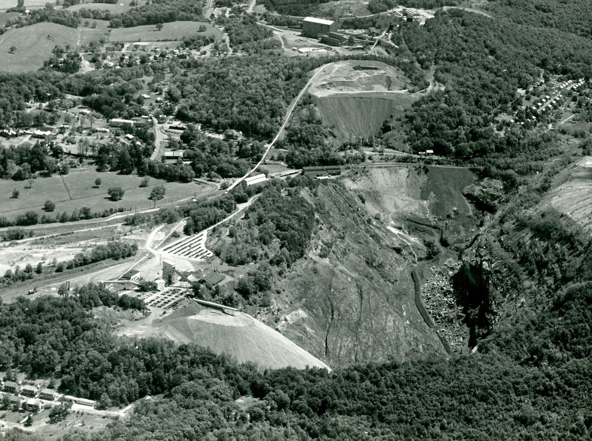
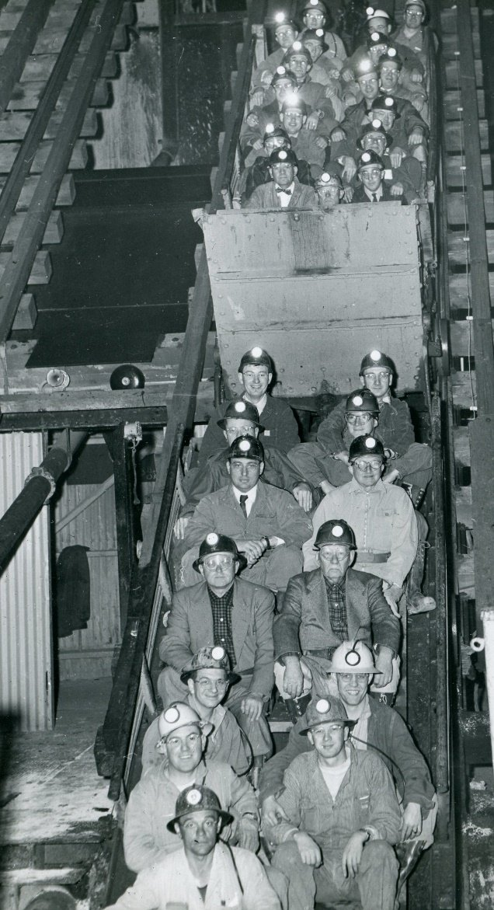
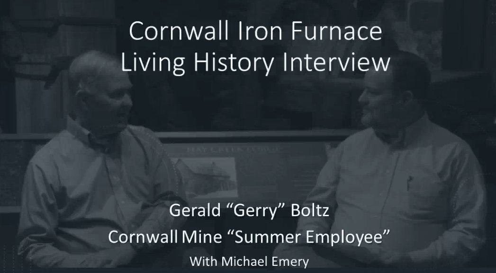
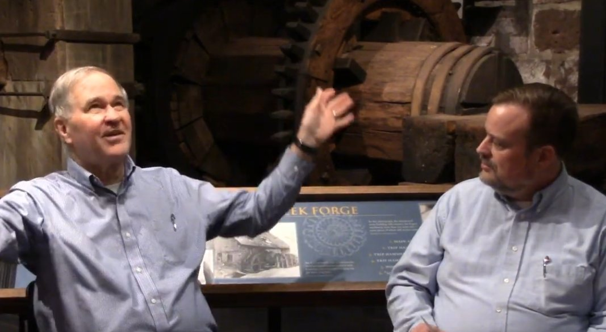

Fifty-one years ago, Tropical Storm Agnes flooded the Cornwall Mine, expediting the end of over 230 years of operation when it closed a year later on June 30, 1973. Though Lebanon County's industry and commerce have moved on, they owe their existence to the discovery and development of what had once been described as the largest iron mine in the western hemisphere, with its lode of rich magnetite ore and other precious minerals.
With the coming of 2023 the Cornwall Iron Furnace intends to celebrate the 50th anniversary of the closure of the mine by recognizing Cornwall's "greatest generation," those few miners and iron workers who remain among us.
First Interview: Clair Bernard
The celebration began with the release of a video on the Furnace's YouTube™ channel featuring an oral history interview with Cornwall Manor resident Clair "Nip" Bernard, who worked in Mine No. 3 for about 15 years until much of the mine closed in 1972. The video may be watched here.


After leaving the mine, Clair continued his employment with Bethlehem Steel at the Millard limestone quarry near Annville. Both Clair's father and grandfather were also Cornwall miners, making him a third-generation employee. His father D.R. Bernard was also a surveyor and active resident of Rexmont.

Two other oral history interviews with Cornwall miners were poised for release. The next video was set for January 24 with another Cornwall Manor resident, Gerald Boltz. His father having been in Bethlehem Steel administration, "Gerry" was able to get a summer job for several years. Working in the same Mine No. 3, his interview describes memories of some of the more menial tasks.
A third video, planned for February 14, would feature Lebanon resident and retired miner Frank Stellar. Frank tells of coming home from World War II with his buddies and finding jobs in the mine. With many tales of working the mine shaft and planting explosives, Frank shares his personal photographs in the video.


Though the 1960s photograph of the open pit shows an impressive view, it is difficult to grasp its expanse and depth. The hidden features are the mine shafts and the complex underground engineering.
The lower left quadrant of the photo shows the surface area of Mine No. 3. On close examination you'll see the descending shaft. To the very lower left is Burd Coleman Village, one of eight villages in Cornwall Borough, adjacent to which used to be the massive Burd Coleman furnaces (removed in the 1920s). To the left are Cornwall Manor with its Buckingham mansion, and the Cornwall Iron Furnace. Upper left is Anthracite Village, also the site of an anthracite furnace now removed.
At the top center of the photograph is what remains of the heavily excavated "Big Hill" and beyond it, the Concentrator Plant. To the upper right, Minersvillage and old Horseshoe Pike (Route 322) can be seen.

You may recognize someone in the above photo of men riding down into Mine No. 3 to start their day's work.
Second Interview: Gerry Boltz
The second interview in the series features Gerald "Gerry" Boltz, who worked the mine as a summer job while attending college locally. The video may be watched here.

In this second hour-long video, Gerry tells his story, from the time he graduated from Lebanon High School in 1962 to working the summer job while in college. He and his wife were life-long teachers in the area, now retired and continuing to live in Lebanon County.
He relates the life of "hard labor" as a mucker, with a shovel constantly in his hand or at his side, cleaning up ore debris by shoveling it back onto the conveyor in Mine No. 3. He recalls observing the use of explosives and equipment to free the iron ore embedded in rock. On the lighter side, as college students he and his peers were inevitably subjected to some testing and teasing at the hands of the career miners.

The February 14 video featuring Frank Stellar remains on schedule. The release of the first two video interviews had already prompted replies from a number of local residents who have memories they're willing to share in future interviews.
That's not to say that only the miners have stories to tell! Certainly there are surviving wives and family members of deceased miners, who have memories or a stash of their own memorabilia. Please share your treasures so that a greater story of the Cornwall iron mine may be preserved for all.
This article and its photographs would not be possible without the gracious assistance of Michael Emery, Site Administrator of the Cornwall Iron Furnace.
Originally published as a two-part series on LebTown, January 18 – 31, 2023.